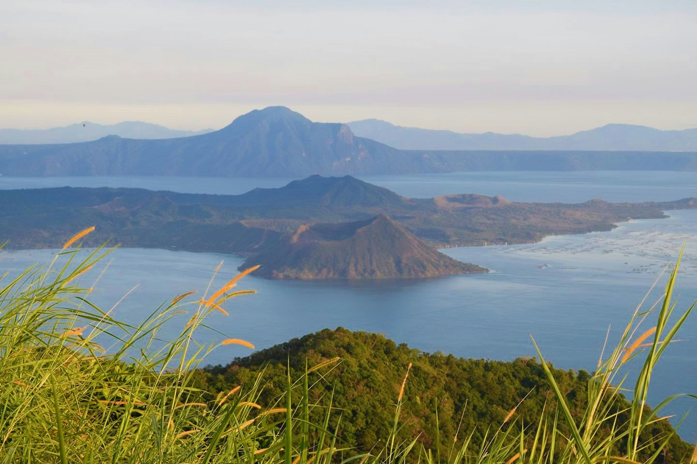
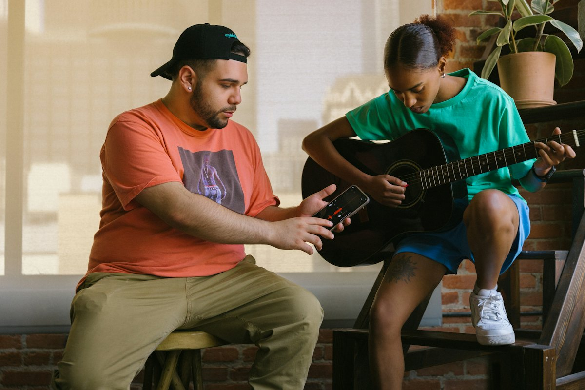
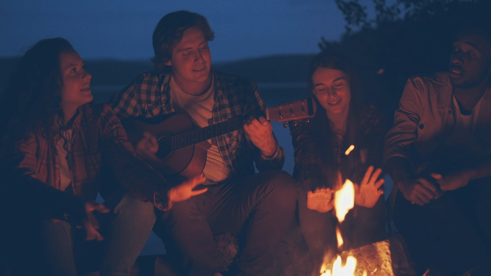

1araw
Day camps · Manila
Isang cowrite kasama ang maliit na grupo at producer, tapos playback na may notes. Pinakamadaling simula, at welcome ang lahat ng level.
Simula 2027iaanunsyo ang mga petsa
Sumali sa listahanSalin ito. Kung may mali, sabihan kami. · Read this in English
Filipino
This page isn't open yet. The English version is ready.
Read it in English
Retreat camp · Camp 01 · Tagaytay, Philippines
Ang unang personal na camp ng bahay: dalawang pod ng tig-12 songwriters sa magkasunod na linggo, isang villa sa burol sa itaas ng Taal Lake, at cowrite rotations mula almusal hanggang lumabas ang mga gitara pagkatapos ng hapunan.
Paano tumatakbo ang camps
Ang camp ang pinakamabilis na paraang alam ko para gumaling sa pagsusulat ng kanta. Hindi mo na hihintayin ang tamang mood. Papasok ka sa kuwarto kasama ang dalawang manunulat na kahapon mo lang nakilala at isang producer, at pagdating ng gabi may kanta nang may simula, gitna at wakas, at demo na pwede mong iparinig.
Tapos uulitin mo kinabukasan kasama ang ibang tao. Sa pagtatapos ng linggo, tatlong kanta na ang naisulat mo, kasama ang siyam na manunulat, sa tatlong istilong baka hindi mo susubukan nang mag-isa. Malalaman mo rin kung ano talaga ang dala mo sa room.
Bawat kanta ay may pinirmahang split sheet sa mismong araw na naisulat ito, kaya bawat manunulat ay uuwing nakasulat ang hati niya, at dala ang mga demo.

Tatlong uri ng camp · simula 2027
Iisa ang ideya ng bawat camp: bagong kasama, tapos na kanta sa dulo ng araw, notes na nakakatulong. Piliin ang haba na bagay sa buhay mo at sa kung nasaan ka bilang manunulat.
Isang cowrite kasama ang maliit na grupo at producer, tapos playback na may notes. Pinakamadaling simula, at welcome ang lahat ng level.
Dalawang cowrite kasama ang magkaibang manunulat, demo ng bawat kanta, at notes mula sa mentors. Para sa mga nakatapos na ng ilang kanta.
Limang araw, kasama ang kuwarto at pagkain, tatlong cowrite at isang listening night. Ang una ay Camp 01 sa Tagaytay: Pod A 10–14 Marso, Pod B 17–21 Marso 2027. Bukas na ang founding offer.
Camp 01 · ang mga detalye
Ang founding offer · para lang sa founding members
Kung sumali ka sa online room habang founding season, ito ang pasasalamat ko. Dalawampu't apat na founding place sa dalawang pod. Ang unang labindalawang manunulat na makukumpirma, sa alinmang pod, ay sasali sa Founding Circle. Ang susunod na labindalawa ay sa Founding Twelve.
12 of 12 places left
12 of 12 places left
Ang founding places ay para sa members na sumali sa online room habang founding season. Hindi ka pa member? Gagawin kang member ng join and reserve form, libre, sa iisang hakbang. Ayon sa pagkakasunod ng pagtanggap ang mga puwesto.
Ang limang araw
Pareho ang limang araw ng dalawang pod. Una ang petsa ng Pod A, tapos Pod B.
Aalis ang shuttle sa Metro Manila
Pagdating, tanghalian sa terrace, hanapin ang kuwarto mo
Welcome circle: paano tatakbo ang linggo, house rules, paano gumagana ang split sheets
Warm-up na pagsusulat nang dalawahan: isang kanta sa isang oras mula sa isang prompt
Hapunan, tapos isang round ng kantang sana ikaw ang sumulat, ikaw ang tutugtog
Almusal at mga kapares ngayong araw sa board
Cowrite session: tatlong manunulat, isang producer, isang kanta
Sabay-sabay na tanghalian
Tapusin ang kanta, tapos i-demo sa booth
Listening circle: pinapatugtog ang bawat kanta, tapat na notes sa bawat isa
Hapunan, at lalabas ang mga gitara
Almusal at bagong mga kapares
Ikalawang cowrite session, bagong mga manunulat at bagong producer
Tapusin at i-demo
The Money Side, kasama ang visiting mentor na si Paul K Saunders: splits, publishing, collecting societies, at paano kumita sa kanta
Hapunan, at pagsusulat sa tabi ng apoy para sa may gusto
Almusal at huling mga kapares
Ikatlong cowrite session
Tapusin at i-demo
Libreng oras: magpahinga, maglakad sa ridge, o pakinisin ang kanta
Listening night: pinapatugtog ang mga kanta ng camp para sa mga inimbitahang bisita mula sa Manila music community
Mabagal na almusal
Mga susunod na hakbang: ano ang ilalabas, ipi-pitch, ire-register, at sino ang patuloy mong kasama sa pagsusulat
Tanghalian at paalaman
Shuttle pabalik sa Metro Manila

Para kanino ito
Hindi sigurado kung handa ka na? Mag-apply ka pa rin at sabihin kung nasaan ka. Kung hindi pa bagay ang camp na ito, sasabihin ko kung alin ang para sa 'yo.
Sino ang makakasama mo
Ako si Darryl Saunders, at ako ang magho-host ng linggo. Ang visiting mentor na si Paul K Saunders, halos apatnapung taon na sa musika (pirate radio, BBC, A&R sa major label, festivals, management at sarili niyang label), ang magpapatakbo ng money-side workshop.
Apat na producer at dalawang guest mentor ang sasama. Iaanunsyo ang mga pangalan nila sa mga nag-apply sa Enero 2027.
Mga praktikal na bagay
Aalis ang shuttle mula sa isang central pickup point sa Metro Manila nang 11:00 sa Miyerkules ng pod mo, at ibabalik ka bandang 15:30 sa Linggo.
Lilipad papunta? Lumapag sa Manila (NAIA) bago mag-Martes ng pod mo at magpapadala kami ng mga hotel malapit sa pickup. Maraming nasyonalidad ang pwedeng pumasok sa Pilipinas nang walang visa hanggang 30 araw. Tingnan ang patakaran para sa passport mo.
Mga tanong
Gumagana lang ang camp kung may mga taong kayang tapusin ang kanta nang magkakasama sa bawat kuwarto. Limang minuto lang ang aplikasyon at tinutulungan ako nitong bumuo ng magagandang grupo. Karamihan ng nag-a-apply nang tapat ay natatanggap.
Oo. Ang join and reserve form ang gagawa sa 'yong founding member ng online room (libre) at hihingi ng puwesto mo sa camp nang sabay.
Ang mga sumulat nito, nakatala sa split sheet na pinirmahan sa mismong araw. Sa 'yo ang buong writer's share. Ang publishing ay pantay na hinahati sa mga manunulat sa kuwarto, 90% lahat-lahat, at 10% sa bahay. Kung tatlong manunulat, 30 / 30 / 30 / 10 iyon. Ang 10% ng bahay ang pambayad sa pag-register ng mga kanta at pag-pitch ng pinakamaganda sa artists, brands at sync.
Nag-iimbita kami ng mga tao mula sa Manila music community, na pwedeng kasama ang artists, producers at mga tao mula sa labels at publishers. Hindi ako mangangako kung sino ang darating, o na may pipirma. Para sa maayos na pagtugtog ng mga kanta ang gabing iyon.
Tag-araw ang Marso at bihira ang bagyo, pero kung kailangan naming ilipat o ikansela ang camp, makakakuha ka ng buong refund, o ilipat ka sa bagong petsa.
Sumali at mag-reserve · Camp 01
Isang form. Kung hindi ka pa member, gagawin ka nitong founding member ng online room, libre. Hihingi rin ito ng puwesto mo sa camp.